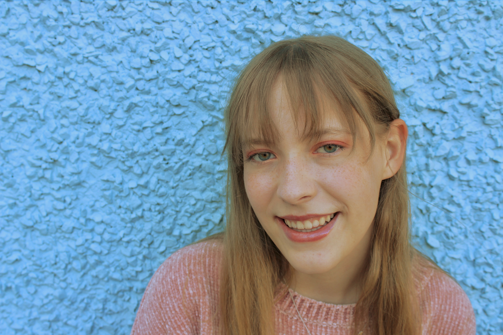
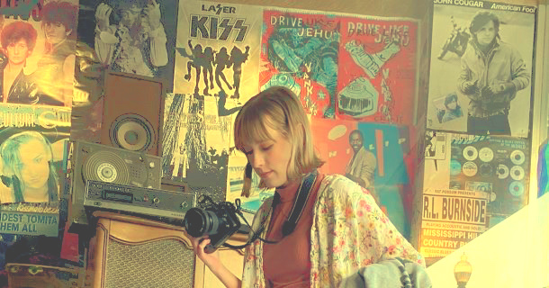

Hi, I'm Emily Paterson!
I am currently a sophomore double majoring in Professional and Public Writing & Experience Architecture at Michigan State.
As I learn more about myself, I’ve discovered that I love channeling my drive and creativity into causes I care about.


I am passionate about eliminating barriers and creating bridges to truly accessible public resources.
Whether it be through art, words, code, or just a helping hand, I hope my work can build a more creative, comforting, and colorful world.